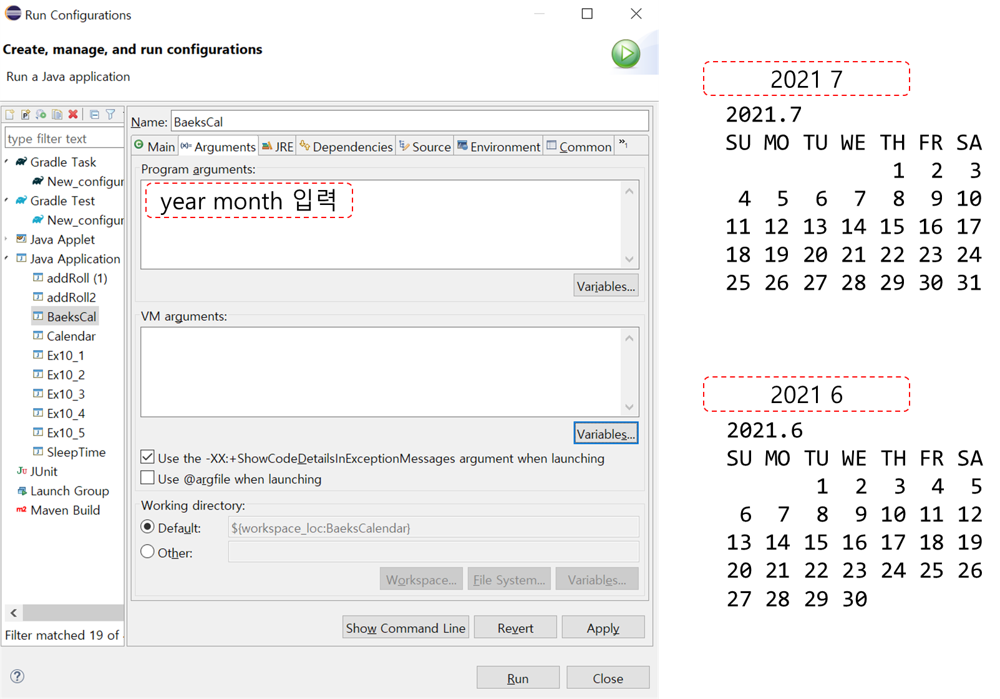

Ch10-6~8. Calendar 클래스3
Full Table Of Contents
Chapter10. 날짜와 시간 & 형식화
0. 목차
Ch10 - 6. Calendar 클래스 예제4
Ch10 - 7. Calendar 클래스 예제5
Ch10 - 8. Date와 Calendar간의 변환
Ch10 - 6. Calendar 클래스 예제4
▶ add()란?
▷ add()는 특정 필드의 값을 증가 또는 감소
▷ 다른 필드에 영향有
Calendar date = Calendar.getInstance();
date.clear();
date.set(2021, 6, 31); // 2021.07.31
System.out.println(new Date(date.getTimeInMillis()));
date.add(Calendar.DATE, 1);
System.out.println(new Date(date.getTimeInMillis()));
date.add(Calendar.MONTH, -8);
System.out.println(new Date(date.getTimeInMillis()));
// console
// [set 2021.07.31]
Sat Jul 31 00:00:00 KST 2021
// [add.Date+1 2021.07.31 → 2021.08.01]
Sun Aug 01 00:00:00 KST 2021
// [add.Month-8 2021.08.01 → 2020.12.01]
Tue Dec 01 00:00:00 KST 2020
▶ roll()란?
▷ roll() ≒ add()
▷ 특정 필드의 값을 증가 또는 감소
▷ 단, 다른 필드에 영향無
Calendar date = Calendar.getInstance();
date.clear();
date.set(2021, 6, 31); // 2021.07.31
System.out.println(new Date(date.getTimeInMillis()));
date.roll(Calendar.DATE, 1);
System.out.println(new Date(date.getTimeInMillis()));
date.roll(Calendar.MONTH, -8);
System.out.println(new Date(date.getTimeInMillis()));
// [set 2021.07.31]
Sat Jul 31 00:00:00 KST 2021
// [roll.Date+1 2021.07.31 → 2021.07.01]
Thu Jul 01 00:00:00 KST 2021
// [roll.Month-8 2021.07.01 → 2020.11.01]
Mon Nov 01 00:00:00 KST 2021
roll()은 다른 필드에 영향을 미치지 않음
- add() 7/31 → Date +1 → 8/1 : 일 변경 → 월 변경
- roll() 7/31 → Date +1 → 7/1 : 일 변경 → 월 변경X
▶ 실습
▷ 현재 2021.07.31
public static String toString(Calendar c) {
return c.get(Calendar.YEAR) + ":" +
(c.get(Calendar.MONTH) + 1) + ":" +
(c.get(Calendar.DATE));
}
Calendar cal = Calendar.getInstance();
cal.set(2021, 6, 31);
System.out.println(toString(cal));
// console
2021:7:31
▷ 1일 후
// add()
cal.add(Calendar.DATE, 1);
System.out.println(toString(cal));
// console
2021:8:1
// roll()
cal.roll(Calendar.DATE, 1);
System.out.println(toString(cal));
// console
2021:7:1
▷ 10년 후
// add()
cal.add(Calendar.YEAR, 1);
System.out.println(toString(cal));
// console
2022:8:1
// roll()
cal.roll(Calendar.YEAR, 1);
System.out.println(toString(cal));
// console
2022:7:1
▷ 7달 후
// add()
cal.add(Calendar.MONTH, 7);
System.out.println(toString(cal));
// console
2023:3:1
// roll()
cal.roll(Calendar.MONTH, 7);
System.out.println(toString(cal));
// console
2022:2:1
Ch10 - 7. Calendar 클래스 예제5
▶ 달력 출력
▷ args[] 매개변수에 년도, 월을 입력 받음
public static void main(String[] args) {
if (args.length != 2) {
System.out.println("INPUT! : year month");
return;
}
// console
INPUT : year month // args에 아무것도 입력 안해서 그럼
Run → Run Configurations → Arguments → 입력
ex. 2021 7
▷ String으로 받은 args[]를 int로 변경
int year = Integer.parseInt(args[0]);
int month = Integer.parseInt(args[1]);
▷ 1일 설정
▷ sDay.set(year, month - 1, 1)
Calendar sDay = Calendar.getInstance();
sDay.set(year, month - 1, 1);
6/1 // 6월이라 나와도 요일이나 일수는 7월 거로 나옴
▷ 말일 설정 : 30 or 31
▷ eDay.set(year, month, 1)의 전날 = month의 말일
Calendar eDay = Calendar.getInstance();
eDay.set(year, month, 1);
eDay.add(Calendar.DATE, -1);
- Run → Run Configurations → Arguments → 2021 7 → 7월은 31일까지
- 6/31 // 6월이라 나와도 요일이나 일수는 7월 거로 나옴, 6월은 30일까지
▷ 1일의 요일 구하기
int START_DAY_OF_WEEK = 0;
START_DAY_OF_WEEK = sDay.get(Calendar.DAY_OF_WEEK);
5 // 일-1, 월-2, 화-3, 수-4, 목-5, 금-6, 토-7
▷ 0 < 1일의 요일 : 공백 만들어 주기
for (int i = 1; i < START_DAY_OF_WEEK; i++) {
System.out.print(" ");
}
▷ 1일의 요일부터 말일까지 날짜 찍어주기
▷ 7의 배수일 때 줄 바꿈 : 7의 배수 = 7로 나누었을 때 나머지가 0
for (int j = 1, n = START_DAY_OF_WEEK; j <= END_DAY; j++, n++) {
System.out.printf(" %2d", j);
if (n%7 == 0) System.out.println();
}
- 1일 ~ END_DAY(말일)
__START__DAY__OF__WEEK__ 1 2 3 4 5 6 7 8 9 10 11 12 13 14 15 16 17 18 19 20 ... 30 31
- START_DAY_OF_WEEK 부터 1씩 증가
- 7의 배수가 될 때 나머지가 0
n%7 == 0
- 줄 바꿈
if (n%7 == 0) System.out.println();
▷ 전체
package baek;
import java.time.DayOfWeek;
import java.util.Calendar;
public class BaeksCal {
public static void main(String[] args) {
if (args.length != 2) {
System.out.println("INPUT! : year month");
return;
}
int year = Integer.parseInt(args[0]);
int month = Integer.parseInt(args[1]);
int END_DAY = 0;
Calendar eDay = Calendar.getInstance();
eDay.clear();
eDay.set(year, month, 1);
eDay.add(Calendar.DATE, -1);
int START_DAY_OF_WEEK = 0;
Calendar sDay = Calendar.getInstance();
sDay.clear();
sDay.set(year, month - 1, 1);
System.out.println(" " + args[0] + "." + args[1]);
System.out.println(" SU MO TU WE TH FR SA");
START_DAY_OF_WEEK = sDay.get(Calendar.DAY_OF_WEEK);
END_DAY = eDay.get(Calendar.DATE);
for (int i = 1; i < START_DAY_OF_WEEK; i++) {
System.out.print(" ");
}
for (int j = 1, n = START_DAY_OF_WEEK; j <= END_DAY; j++, n++) {
System.out.printf(" %2d", j);
if (n%7 == 0) System.out.println();
}
}
}

▷ 달력 point! 말일 구하기 + 1일 요일 구하기!!
Ch10 - 8. Date와 Calendar간의 변환
▶ Date와 Calendar간의 변환이란?
▷ Date의 메서드는 대부분 deprecated 되었지만 여전히 사용
deprecated: 사용하지 않을 것을 권장
▷ Date의 메서드 : JDK1.0부터 사용
▷ 하위 호환성을 중시하는 java Date의 메서드를 사용할 수 있도록 함
// Calendar → Date
Calendar cal = Calendar.getInstance();
...
Date d = new Date(cal.getTimeInMillis());
// Date → Calendar
Date d = new Date();
...
Calendar cal = Calendar.getInstance();
cal.setTime(d)